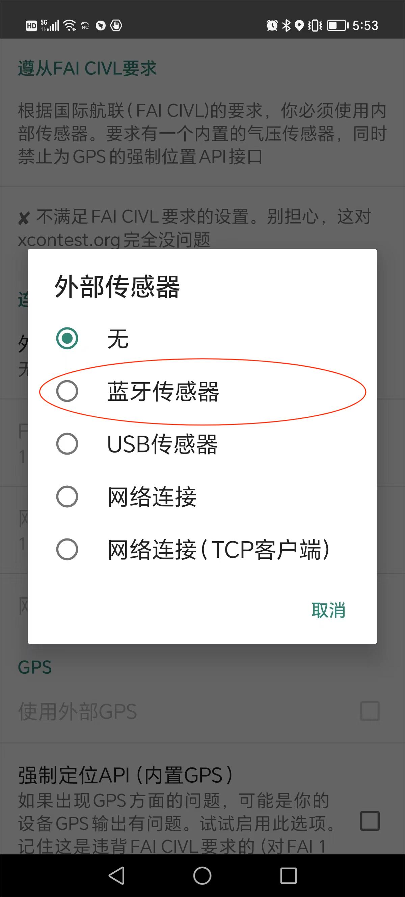

<table border="0" width="960" cellspacing="2" cellpadding="2" align="center">
<tbody>
<tr>
<td style="width: 943.651px;" colspan="2">
<div align="center"><span style="font-size: 36pt;">靛颏飞行高度表设计和使用说明</span><hr></div>
</td>
<td style="width: 1.15px;">&nbsp;</td>
</tr>
<tr>
<td style="width: 297.438px;" width="25%">
<div align="center"></div>
</td>
<td style="width: 646.213px;">
<ul>
<li>硬件平台：M5Stack Core2 for AWS，可堆叠扩展</li>
<li>主控芯片：ESP32-D0WDQ6-V3，240M双核, 600 DMIPS, 520KB SRAM</li>
<li>传感器：ENV-III（QMP6988，SHT30）气压和温湿度环境传感器</li>
<li>软件平台：VSCode+pio+esp-idf，满足复杂功能设计需求</li>
<li>内置RTC实时时钟、MPU6886姿态传感器、串行LED、震动马达</li>
<li>NS4168+1W扬声器，在风噪中也能保持声音洪亮</li>
<li>24位真彩显示屏，阳光下也有足够亮度</li>
<li>支持蓝牙BLE，可以连接手机XCTrack，作为外部气压计协同工作</li>
<li>500mAh内置锂电池，提供3小时稳定续航</li>
</ul>
</td>
<td style="width: 1.15px;">&nbsp;</td>
</tr>
<tr>
<td style="width: 944.801px;" colspan="3" height="2946"><hr>
<div align="center"><a href="#software_intro">产品简介</a>&nbsp;&nbsp;<a href="#copyright">版权声明</a>&nbsp;&nbsp;<a href="#risk">风险声明</a>&nbsp;&nbsp;<a href="#functions">安装指导</a> &nbsp;<a href="#samples">功能介绍</a>&nbsp;<a href="#todo">后续规划</a>&nbsp; <a href="#contact">联系方式</a></div>
<a id="software_intro" name="software_intro"></a><hr>
<p>【产品简介】</p>
<p>靛颏滑翔伞高度表是专门为滑翔伞运动员设计的飞行高度计，能够在上升和下沉时通过声音提示飞行员及时了解飞行状态。</p>
<p>和飞行电脑不同，滑翔伞高度计设计小巧，便于携带；但是因为它功能相对简单，因此不能取代飞行电脑。</p>
<p>因为设计的初衷就是为了无动力滑翔伞飞行员使用，无法确定是否合适动力伞、三角翼、翼装等其它飞行场景。</p>
<a id="copyright" name="copyright"></a><hr>
<p>【版权声明】</p>
<p>本产品直接使用M5Stack Core2 for AWS（另一个名称：AWS IOT Edu-Kit）和ENV-III作为基础硬件。详细的资料和规格可以在<a href="https://m5stack.com/">M5Stack官网</a>上查阅。</p>
<p>本产品软件由SnailTrail.ORG网站，基于<a href="https://github.com/m5stack/Core2-for-AWS-IoT-Kit">M5Stack Core2 for AWS Factory Firmware</a>例程开发，但是因为部分软件代码尚未得到开源授权，暂时无法进行开源发布，需要的朋友可以联系SnailTrail.ORG提供未授权部分以外的代码。</p>
<p>任何组织和个人都可以通过购买硬件和传感器，烧录蓝颏滑翔伞高度表的固件制作、使用甚至是销售本产品，无需支付任何费用，但是相应的风险由制作者、使用者自行承担。</p>
<a id="risk" name="risk"></a><hr>
<p>【风险声明】</p>
<p>由于</p>
<ul>
<li>本产品的硬件、软件可能存在一些未知的BUG导致异常</li>
<li>根据大气压力计算的海拔高度本身存在理论偏差</li>
<li>海平面参考大气压强的周期性和随机波动</li>
<li>其它空间环境和地理环境的随机变化</li>
</ul>
<p>的原因，SnailTrail.ORG无法保证本产品显示的数据，传输的数据，发出的声音在任何时刻都是符合预期的。</p>
<p>使用者必须完整、清楚地理解：</p>
<ul>
<li>任何飞行辅助类设备都有可能因为各种故障或者环境因素提供错误的信息给到飞行员，飞行员不能完全相信飞行仪表提供的信息；</li>
<li>任何飞行辅助类设备都不能代替飞行员的主动观察和主观判断，飞行员不能依赖飞行仪表而放弃主动观察、提前预判和自主决策；</li>
<li>使用本产品在给飞行员带来便利的同时，也有可能给飞行员带来不可预知的风险。</li>
<li>上述风险完全由使用者自己承担。</li>
</ul>
<p>如果不能完整、清楚地理解以上内容，请不要制作、使用、销售本产品。</p>
<a id="functions" name="functions"></a><hr>
<p>【安装指导】</p>
<p>第一步，购买硬件：</p>
<p>使用者需要购买以下两个硬件来制作本产品（由于是同一家的产品，可以一起购买）：</p>
<p>1，<a href="https://docs.m5stack.com/en/core/core2_for_aws">M5Stack Core2 for AWS 控制器（点击进入官网介绍和购买链接）</a></p>
<p style="text-align: center;"></p>
<p style="text-align: left;">2，<a href="https://docs.m5stack.com/en/unit/envIII">ENV-III环境传感器（点击进入官网介绍和购买链接）</a></p>
<p style="text-align: center;"></p>
<p>第二步，组装：</p>
<p>收到控制器和传感器后，检查附件，后续需要用到的是：</p>
<p>USB Type-C数据线，用来给控制器充电并且在烧录软件时需要用它连接控制器和电脑；</p>
<p>4线连接线，用来连接控制器和传感器。</p>
<p>强烈建议先熟悉硬件，完整查看官网上的介绍，并且给控制器充满电，了解如何开关机，操作预装的软件界面，了解其功能特性。</p>
<p>真正的组装过程很简单，就是用4线连接线将控制器和传感器连接在一起，连接线两端的端子都有防反插功能，不可用蛮力。控制器本身有3个同类型的接口，要找颜色一致，也就是红色的接口来连接（千万不要连错接口，否则有可能烧坏控制器或者传感器）。</p>
<p>现在看起来，产品的组装已经完成了，一个控制器，通过一段软软的线连接一个传感器 &mdash;&mdash; 是的，不够整洁，也不够坚固 &mdash;&mdash; 可不可以更美观一点？答案是可以的，这需要你有一定的动手能力，做以下几件事情：</p>
<p>1）用控制器自带的六角扳手把控制器背面的四颗螺丝打开，是的，它们长短不一，所以你一定要按顺序放好，别弄混了。把控制器打开；</p>
<p>2）用合适的六角扳手把传感器的外壳打开，取出电路板。如果找不到合适的扳手，用尖嘴钳直接破坏外壳也可以，但是要注意不要损伤里面的电路板；</p>
<p>3）发挥你的聪明才智，反复对照接口和连线，然后把传感器从内部焊接到控制器对应的接口上，这里需要注意：</p>
<ul>
<li>控制器的接口不要破坏，要保留外部接口完整，这样仍然可以扩展其它外设；</li>
<li>注意空间大小，不要产生干涉，避免控制器无法扣合，必要时可以把4线连接线剪下一段使用；</li>
<li>焊接是个技术活，并且空间比较狭小，如果你不擅长或者从来没做过，建议找有经验的人帮忙；</li>
<li>焊接完之后，用双面胶把传感器固定一下，要保证传感器件（指的是传感器电路板上的传感器件，QMP6886和SHT30）周围空旷，不要与控制器或者双面胶接触。&nbsp; &nbsp;&nbsp;</li>
</ul>
<p>开盖和焊接这些操作，也不必现在就做，你可以先烧录软件，使用一段时间之后，觉得没有任何问题了再去做，否则，万一连接错误，你会比较难以判断是连接的错误，还是软件烧录的错误。</p>
<p>或者你觉得没有把握做这些，那就简单的用扎带把控制器和传感器绑在一起使用，丑陋就丑陋一点吧，有什么关系呢？</p>
<p>第三步，烧录：</p>
<p>烧录，就是用蓝颏滑翔伞高度表的软件，替换控制器自带的演示软件。</p>
<p>这需要下载一个M5Burner工具和一个CP210x驱动，下载链接在官网的下载页面都可以找到：</p>
<p><a href="https://docs.m5stack.com/en/download">https://docs.m5stack.com/en/download</a></p>
<p>工具和驱动都有不同操作系统的版本，选择与你的操作系统对应的版本，下载，安装就可以了。</p>
<p>接下来是关键了：</p>
<ul>
<li>首先按照上面说的，要把传感器和控制器连接好，无论是在外部用连接线连接，还是在内部焊接的&nbsp;-_^</li>
<li>用USB Type-C数据线把控制器连接到电脑上</li>
<li>打开M5Burner软件</li>
<li>在左侧面板上选择&ldquo;CORE2 &amp; TOUCH&rdquo;</li>
<li>在上部的搜索条中输入&ldquo;paragliding vario&rdquo;</li>
<li>然后你大概率会看到以下的情形（如果看不到，可能是你的网络有问题，或者M5Stack没人维护了）</li>
<li>接下来就简单了，在找到的软件条目的右下角，点击按钮，先下载，再烧录</li>
<li>大概1分钟不到的时间，烧录就完成了，弹出的对话框有提示的</li>
<li>中间千万别断电，万一控制器变砖就不好玩了</li>
</ul>
<p style="text-align: center;"></p>
<p>烧录完成后，控制器会自动重启，如果没有什么差错的话，重启之后的界面就是蓝颏滑翔伞高度表的界面了。</p>
<p>如果不成功呢？我也不知道，要不就重新再来一遍？</p>
<p><a id="samples" name="samples"></a></p>
<hr>
<p>【功能介绍】</p>
<p>一、外观</p>
<ul>
<li>电源开关：在关机状态下，按一下开机；在开机状态下，长按大约8秒关机。如果按键无效，说明你力气太小；</li>
<li>除了电源开关可以控制开关机之外，系统也会在长时间没有高度变化的情况下自动关机，这里的长时间大概是300秒。</li>
<li>复位按钮：这个好像没什么大用，但是是硬件设计带的，软件也控制不了，无法改成别的功能；</li>
<li>USB接口：这个既是充电口，也是烧录接口；</li>
<li>另外，控制器的底座，有四个脚垫，这四个脚垫本身是带有磁性的，可以方便固定控制器，但是如果你只依赖这个磁性来固定控制器，那你就傻了，你会后悔的。</li>
</ul>
<p>二、主界面</p>
<p style="text-align: center;"></p>
<p>主界面的两侧，是动画显示的速度表，动态显示上升或者下降的速度，这个懂的都懂。左右两个是一样的。为什么要做两个呢？因为我喜欢 ^_^</p>
<p>主界面的上边一排，分别是实时时钟，锁定标志，GPS标志，SD卡标志，蓝牙标志，音量标志，电池电量和充电标志；</p>
<ul>
<li>实时时钟：24小时制的时钟显示，做这个也挺麻烦的，但是貌似也没什么用啊。不过硬件有RTC电路，不做出来太浪费了；</li>
<li>锁定标志：这个锁头是按钮锁定的标志，有锁头说明按钮被锁定了，没有锁头，按钮是可以操作的；</li>
<li>GPS标志：这个是预留的标志，M5Stack可以堆叠一个GPS模块的，后面有空就堆叠一下，并且把软件做好；</li>
<li>SD卡标志：这个也是预留的，控制器上有SD插槽，可以插入内存卡，用来记录飞行数据和GPS位置记录，不过目前软件还没有支持，等有空了也一起做一下；</li>
<li>蓝牙标志：这个已经实现了，如果系统的蓝牙开关是关闭的，这个标志是灰色的，如果系统的蓝牙开关是打开的，但是没有建立蓝牙连接，这个标志是黄色的，如果已经和手机建立连接了（比如连接到XCTrack上了），那么这个标记就是蓝色的；</li>
<li>音量标志：显示当前音量的大小，显示只有三个档：静音，其它音量，最大音量，实际音量是连续可调的；</li>
<li>电池电量：显示电池电量，红了要充电，黄了要尽快充电，绿了说明还可以继续用；</li>
<li>充电标志：充电的时候，电池电量标志上会有一道闪电，希望每个想减肥的人都能瘦成一道闪电。</li>
</ul>
<p>主界面的中间是5个实时数据显示栏，分别是高度，速度，气压，温度和湿度。高度是通过气压算出来的，和GPS高度会有很大偏差，在没有GPS模块修正的情况下，不是很准确，但是在气压没有剧烈变化的天气中，无论是气压还是通过气压计算出来的高度的变化量是精确的，这也是本产品的基本工作原理；速度是指垂直方向上的速度，显示的是滑翔伞正在上升或者下降，上升为正值，下降为负值，数值越大，上升或者下降得越快；气压的单位是毫巴，也是百帕，一个标准大气压大约是101325帕斯卡，是1巴，毫巴就是千分之一巴，所以差不多就是100帕斯卡，1帕斯卡就是1牛顿/平方米，感觉挺小的~~</p>
<p>重点来了~主界面的最下方，屏幕显示之外，有三个红圈，不是很明显，这是三个触摸按钮，我们把它们定义为左按钮，中间按钮和右按钮。</p>
<p>注意是触摸按钮，不要试图把它们按动，他们可能会被按碎，不会被按动。</p>
<p>左按钮：长按切换按钮锁定和解锁，长按的时间大约是5秒钟，系统检测到长按，会驱动震动马达提示用户：长按的时间已经够了，知道你已经很累了，不用再继续按了...</p>
<p>长按锁定按钮操作如果发生在设置界面（后面会说明什么是设置界面），系统会在锁定按钮的同时自动返回到主界面。</p>
<p>在按钮不被锁定的状态，短按左侧按钮，会临时性地调整音量大小，按一下声音就大一点，再按一下，声音就再大一点，达到100%的音量时，继续按一下就变成静音，然后再重新逐步增大。临时性的意思是可以改变当前音量的大小，但是不会保存音量值，所以系统下一次启动的时候，音量值会恢复成为保存的音量值，要想修改音量值并永久生效，需要在设置界面中调整音量值。这样的设计是为了在不同噪声环境下临时调整音量。</p>
<p>中间按钮：在按钮没有被锁定的情况下，短按中间按钮会切换主界面和设置界面。也就是在主界面中，短按中间按钮会切换到设置界面，在设置界面中，短按中间按钮会返回主界面，无论是主界面还是设置界面，在屏幕上左右滑动都会切换成不同的屏显。按钮被锁定后，左右滑动切换屏显不受影响。</p>
<p>右侧按钮：在按钮没有被锁定的状态下，短按右侧按钮，会临时性调整屏幕亮度，同左按钮的音量调整一样，亮度也是循环调整的，并且也不会保存到下一次重启之后。要想永久修改亮度，也需要到设置界面去设置。</p>
<p>主界面一共有三个屏显，上面主要介绍了第一个显示各种参数的屏显，向左滑动主界面，会显示如下两个附加的屏显：</p>
<p style="text-align: center;"></p>
<p style="text-align: left;">这个屏显目前是个静态图片，保留给运动传感器MPU6886显示运动姿态使用，控制器已经包含了MPU6886传感器，但是目前还没有想好如何动态显示运动姿态。</p>
<p style="text-align: center;"></p>
<p style="text-align: left;">这个屏显目前也是静态图片，保留给后续实现指南针功能。指南针功能需要地磁传感器提供数据，控制器中并没有地磁传感器，需要额外增加。规划是后续开发一个小板，把压力传感器、湿度传感器、地磁传感器集成起来，一起添加到控制器内部空间中。</p>
<p>三、设置界面</p>
<p>如前面描述，在按键没有被锁定的情况下，短按中间按钮会在主界面和设置界面中进行切换，在设置界面中，左右滑动屏幕会在各个设置项中切换。当前有如下几个设置项可供用户设置：</p>
<p style="text-align: center;"></p>
<p style="text-align: center;">上图是时间设置，用来调整系统时间。</p>
<p style="text-align: center;"></p>
<p style="text-align: center;">上图是音量设置，用来调整系统音量。</p>
<p style="text-align: center;"></p>
<p style="text-align: center;">上图是亮度设置，用来调整屏幕亮度。</p>
<p style="text-align: center;"></p>
<p style="text-align: center;">上图是温度调整值设置，因为控制器内部发热的原因，传感器测得的温度值和环境温度会有一个固定的偏差，通过设置温度的调整值，可以使显示的温度尽可能与环境温度相当。</p>
<p style="text-align: center;"></p>
<p style="text-align: center;">上图是系统的蓝牙开关，打开开关，在下一次系统运行的时候，会启动蓝牙模块；关闭开关，在下一次系统运行的时候，会关闭蓝牙模块。</p>
<p style="text-align: center;"></p>
<p style="text-align: center;">上图是复位所有设置参数到系统缺省值的选项，点击Reset按钮，即即会将所有设置参数恢复成为默认值。因为这个操作有点大，所以控制器会自动重启。</p>
<p style="text-align: left;">在设置界面设置的所有参数，都会被保留到NVS FFLASH空间，在系统关机甚至是断电之后仍然不会丢失，在后续的运行中仍然生效。</p>
<p style="text-align: left;">部分系统设置选项，在修改的时候用户能够明显感觉到反馈，比如音量和亮度等，系统就没有必要提示用户设置成功；有些设置项并不能让用户直观感受到设置是否成功，这种情况下，系统会驱动振动马达产生一个大约200ms的短促震动，提示用户设置成功了。</p>
<p style="text-align: left;">四、连接XCTrack</p>
<p style="text-align: left;">如前所述，打开蓝牙开关，重新运行系统，确保主界面的蓝牙标志是黄色的，表示蓝牙模块已经启动了。然后：</p>
<ul>
<li style="text-align: left;">在手机上运行XCTrack APP</li>
<li style="text-align: left;">向下拉手机屏幕，呼唤出XCTRack的菜单</li>
<li style="text-align: left;">选择首选项</li>
</ul>
<p style="text-align: center;"></p>
<p style="text-align: center;">依次选择&ldquo;连接&amp;传感器&rdquo;，&ldquo;外部传感器&rdquo;，&ldquo;蓝牙传感器&rdquo;</p>
<p style="text-align: center;"></p>
<p style="text-align: center;">在蓝牙设备列表中，选择&ldquo;BlueThroat&rdquo;，然后回到&ldquo;外部传感器&rdquo;那一页，向下拉，确保&ldquo;使用外部气压计&rdquo;选项被勾选。</p>
<p style="text-align: center;"></p>
<p style="text-align: center;">返回到XCTrack主页面，静等蓝牙连接成功，蓝牙图标后面的感叹号消失，主界面已经有垂直速度显示，手机已经发出&ldquo;嘟嘟&rdquo;的提示音。</p>
<p style="text-align: center;">与此同时，靛颏屏幕上的蓝牙标志也应该变蓝了。</p>
<p style="text-align: center;"></p>
<p style="text-align: center;">至此，大功告成。</p>
<p><a id="todo" name="todo"></a></p>
<hr>
<p>【后续规划】</p>
<p style="text-align: center;"><a href="todolist.xlsx"></a></p>
<p><a id="contact" name="contact"></a></p>
<hr>
<p>【联系方式】</p>
<p style="text-align: right;">EMAIL：<a href="mailto:michael@snailtrail.org">michael@snailtrail.org</a></p>
<p>&nbsp;</p>
<hr>
<p style="text-align: right;">SnailTrail.ORG</p>
<p style="text-align: right;">2023年4月</p>
</td>
</tr>
<tr>
<td style="width: 944.801px;" colspan="3">
<div align="center">&nbsp;</div>
</td>
</tr>
</tbody>
</table>